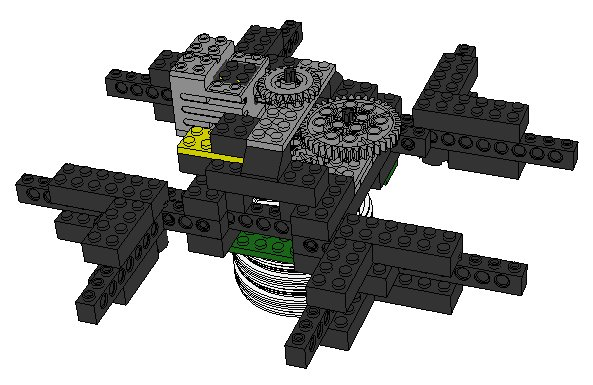
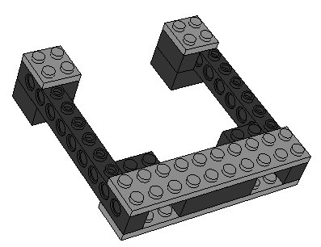
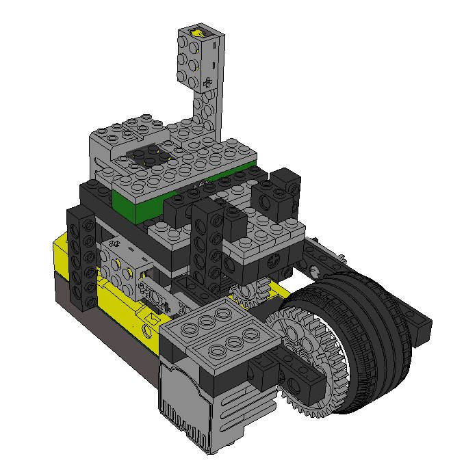

Bartender
page was renamed from DrinkMixer
My second major LEGO Mindstorms project, after a long lull of inactivity, is complete. This time, I'm created an automated bartender that's capable of mixing together up to 4 kinds of drinks to create layered cocktails. Unfortunately, the layering isn't perfect since the pouring mechanism is very simplistic. As in all of my mindstorms projects, I only used the pieces provided in the mindstorms set.
= Hardware =
After completion of this project, I imported everything into [[http://www.leocad.org|Leocad]] format. You can find links to the .lcd files under the following images. The bartender consists of two parts: the rotator part, and the base, which consists of a tipping mechanism.
The rotator carries four standard 150ml beakers, full of the ingredients which to mix together. It slides on top of a tyre-less motorcycle wheel. Two more wheels have been added to lift the beakers sufficiently from the tipping mechanism. Here's a picture:
{{}}
[[]]
Each of the four arms contains a freely resting tipper gizmo, which holds the beaker. I used the tyre from the motorcycle wheels as bushes around the beakers (it's a perfect fit!) so that they don't fall through. Here's what it looks like:
{{}}
[[]]
The base is pretty dense, and rests on a baseplate (not illustrated). This is done so that the bartender doesn't collapse under the weight of the beakers and liquid. The base also has the pouring mechanism. The idea is very crude: a rotating wheel with a tyre is lifted by the lifting arm. The tire makes contact with the beaker and tips it by raising the arm turning the wheel:
{{}}
[[]]
= Software =
Instead of writing in NQC and using the provided LEGO firmware, I used brickos and developed in pure C.
It was difficult to determine the volume of liquid that has poured out of the beaker. I had to start with the assumption that each beaker contains 100ml of liquid. Then, through trial and error, I calculated volume as a function of the time elapsed since starting the pouring process.
= Webtender =
I wanted to create a web-based drink database that would also allow to export drink recipies to brickos programs.